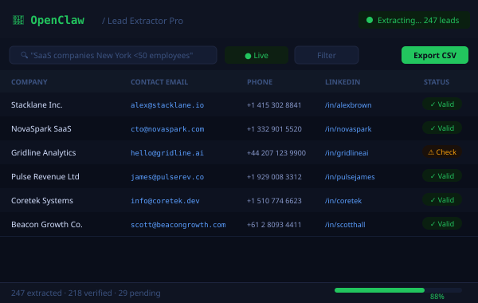

A pipeline full of the right people, not cold guesses.
I turn the open web into clean, verified lead lists and data feeds that land straight in your CRM — so your time goes on conversations, not research. Powered by OpenClaw and custom scraping workflows.

Automated intelligence for lead generation and data enrichment
OpenClaw is an AI-powered data extraction and automation platform. It can navigate websites, extract structured data, identify qualified leads, and push that data directly into your CRM, spreadsheet, or downstream automation, without manual research.
For businesses that rely on prospecting, market research, or competitive analysis, OpenClaw eliminates the most time-consuming part of the workflow. I configure and deploy OpenClaw systems that run continuously, surface fresh leads on a schedule, and route them into exactly the right pipeline stage.
The result is a predictable, scalable lead flow that doesn't depend on a person sitting at a desk doing research. Your pipeline fills itself.
From zero leads to a full pipeline
Three steps from target definition to a self-filling CRM.
Define your ideal prospect
We map out exactly what a qualified lead looks like for your business, industry, size, geography, signals, and intent markers. This defines the scraping logic and filters that separate noise from opportunity.
Configure and connect
I set up the OpenClaw extraction workflows, connect them to your CRM (GoHighLevel, Airtable, HubSpot, or a spreadsheet), and build the enrichment layer that adds contact details, firmographic data, and lead scores automatically.
Set it running
The system runs on a schedule, daily, weekly, or real-time, surfacing fresh leads and routing them into the right pipeline stage. You review qualified opportunities, not raw scraped data. Follow-up sequences can trigger immediately.
Pipelines filled with qualified leads
 Client projectData & Lead Generation
Client projectData & Lead GenerationScheduled Website Scraping Pipeline
The problemCollecting data from target websites meant someone copying it out by hand, again and again.
Fully automated data collection — zero manual effort
Lead Nurture & Pipeline System
The problemPaid-ad leads landed in a spreadsheet and waited for whoever remembered to call. Over 60% went cold before first contact.
3× more booked calls from the same ad spend
Keystone — Lead Capture Funnel
The problemA property manager needed a steady flow of qualified owner leads instead of cold enquiries.
38 qualified consultations booked in the first 30 days from Google Ads traffic
Keystone — Vacancy Syndication Console
The problemListing a vacancy meant re-entering the same property on a dozen portals and chasing replies in a dozen inboxes.
Per-listing posting time reduced from 4 hours to 8 minutes